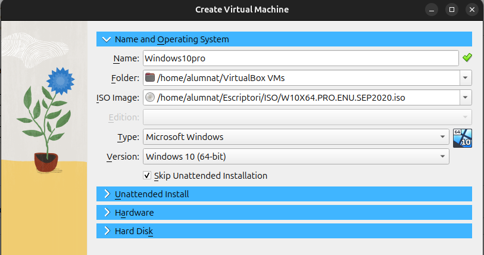

Windows 10 Pro
Què és Windows 10 Pro?
Windows 10 Pro és una edició del sistema operatiu Windows 10 dissenyada especialment per a professionals i entorns empresarials. Aquesta versió incorpora característiques addicionals en comparació amb l'edició Home, com ara:
- Seguretat avançada: Inclou eines i funcionalitats millorades per a la seguretat, com BitLocker per a xifrar dades i funcions de gestió d'identitat.
- Gestió empresarial: Permet la gestió de dispositius i polítiques de seguretat a través d'eines com Active Directory i Microsoft Intune.
- Funcions de productivitat: Suporta funcions que faciliten la multitarea i l'accés a recursos empresarials, millorant la connectivitat i la integració amb xarxes corporatives.
Ús i Aplicacions
Windows 10 Pro és mpliament utilitzat en entorns professionals i empresarials. Algunes de les seves aplicacions inclouen:
- Desenvolupament de programari i proves en entorns virtuals.
- Gestió d'infraestructures informtiques en empreses.
- s en entorns on la seguretat de la informació és prioritria.
- Tasques de productivitat diria que requereixen funcions avançades i una major compatibilitat amb xarxes corporatives.
Aspectes Econòmics
s important destacar que Windows 10 Pro no és un sistema operatiu gratu茂t. Per a la seva instal·lació i ús, és necessari adquirir una llicència vlida. Aquesta inversió és recomanada per a entorns professionals i empresarials, on les funcionalitats addicionals i el suport tècnic justifiquen el cost.
Instal·lació de Windows 10 PRO
A continuació, en el procés d'instal·lació de Windows 10 Pro en una mquina virtual mitjançant VirtualBox, detallant els passos necessaris per configurar i posar en marxa el sistema operatiu en un entorn virtual.
Creació de la Mquina Virtual
- Feu clic a "New" per començar la creació de la mquina virtual.
- Afegiu el nom a la mquina virtual.
- Inseriu la ISO de Windows 10 pro.
- Feu clic a "Skip unattended installation" per procedir amb una instal·lació manual.

Configuració de Recursos
- Escolliu la quantitat de RAM i les CPU virtuals o threads que assignareu a la mquina.
- Deixeu les altres opcions amb els valors per defecte.
Inici de la Instal·lació
- Un cop creada la mquina, feu clic a "Start" per iniciar-la i començar la instal·lació de la mquina.
Selecció de la Configuració Inicial
- A la primera pestanya, seleccioneu l'idioma, el format de l'hora, la moneda i el teclat.
- Feu clic a "Siguiente" (Següent) i després a "Install" per continuar.
Elecció de la Versió del Sistema Operatiu
- A la pestanya següent, seleccioneu la versió del sistema operatiu que voleu instal·lar.
- Escolliu la versió desitjada i feu clic a "Siguiente".
Tipus d'Instal·lació
- Seleccioneu l'opció "Personalitzada" per realitzar una instal·lació manual.
Selecció del Disc d'Instal·lació
- Seleccioneu el disc on voleu instal·lar Windows.
- Si disposeu de diversos discs, assegureu-vos de triar el correcte.
Finalització del Procés
- Espereu mentre es completa el procés d'instal·lació.
- Un cop s'ha completat la instal·lació de Windows 10 Pro, el següent pas és seguir les instruccions que apareixen a la pantalla. Això inclou configurar el nom d'usuari i ajustar altres opcions per personalitzar el sistema segons les teves necessitats.
Crear particions en Windows
Per gestionar particions en Windows, utilitzem l'eina Disk Management. Aquesta eina ens permet crear, eliminar i modificar particions dels nostres discs.
Obrir el gestor de discos
Obrim el "Disk Management". Per fer-ho, podem buscar "disk" al menú d'inici i seleccionar "Create and format hard disk partitions".
Aquesta eina ens mostrar els discs disponibles al nostre equip, així com la seva estructura de particions.
Redimensionar una partició
Per redimensionar una partició, fem clic dret sobre el disc que volem modificar i seleccionem "Shrink Volume".
S'obrir una finestra que ens permet indicar la quantitat d'espai que volem reduir de la partició seleccionada.
Després d'aquesta acció, veurem un espai no assignat a l'eina de gestió de discos.
Crear una nova partició
Per aprofitar l'espai no assignat, hem de crear una nova partició. Fem clic dret sobre l'espai no assignat i seleccionem "New Simple Volume".
Seguidament, es mostrar un assistent on simplement hem de fer Next > Next > Finish.
Seleccionar el sistema de fitxers
Durant el procés, haurem de seleccionar un sistema de fitxers per a la partició. Els sistemes més comuns són:
- NTFS: Recomanat per a Windows, suporta fitxers grans i permisos avançats.
- FAT32: Compatible amb molts dispositius, però limita la mida dels fitxers a 4 GB.
- exFAT: Millor que FAT32 per a dispositius externs, ja que no té la limitació de 4 GB per fitxer.
Finalitzar el procés
Després d'esperar que es completi el formatatge...

...la nova partició ja estar disponible per utilitzar.
Amb això, hem completat la creació d'una partició en Windows!
Punts de Restauració
Els punts de restauració serveixen per desfer canvis en el sistema operatiu i recuperar un estat anterior del sistema si alguna cosa va malament (errors de configuració, instal·lació de programes problemtics, etc.).
s una eina molt útil abans de fer canvis importants en el sistema, com instal·lar drivers o actualitzacions.
Com crear un punt de restauració manualment
Cerquem "Create restore point" al menú d'inici de Windows.
A la pestanya System Protection, seleccionem el disc principal (normalment C:) i fem clic a Configure.
Activem la protecció del sistema i definim un percentatge d'espai del disc per a emmagatzemar punts de restauració.
Un cop activat, seleccionem el disc i fem clic a Create per generar un nou punt de restauració.
Assignem un nom descriptiu al punt de restauració (per exemple: "Abans dinstal·lar drivers NVIDIA").
Esperem que el sistema acabi de crear el punt de restauració.
Ja tenim un punt de restauració disponible! Si cal, podem restaurar lestat del sistema a aquest punt des del mateix menú.
Restaurar el sistema a un punt anterior
Després de crear un punt de restauració, podem provar el seu funcionament:
Descarreguem i instal·lem un programa qualsevol per fer la prova.
Ara, tornem al menú de restauració: "Create restore point" > System Restore.
Seleccionem el punt de restauració que havíem creat prèviament.
Podem fer clic a "Search for affected programs" per veure què s'eliminar o modificar.
ℹ️ El sistema ens mostra els programes i controladors que es veuran afectats.
Els nostres arxius personals NO es perden, només es modifiquen programes i configuracions del sistema.
Resultat de la restauració
Quan finalitza el procés, el sistema torna a lestat en què es trobava en el moment del punt de restauració. Això pot eliminar:
- Programes instal·lats després del punt
- Actualitzacions del sistema
- Canvis en el registre de Windows
s una eina molt útil per desfer errors sense haver de reinstal·lar tot el sistema.
Instal·lació d'aplicacions
En Windows és molt més senzill instal·lar aplicacions que en Linux.
Per exemple, si no vols utilitzar el Microsoft Edge, pots descarregar-te el Google Chrome simplement accedint a la web de Chrome i descarregant-lo.
Fes doble clic en l'arxiu que t'has descarregat i segueix les instruccions que apareixen en pantalla.
I ja ho tindríem.
Instal·lar paquets via PowerShell
També pots instal·lar paquets utilitzant PowerShell.
Obre el PowerShell en mode administrador i escriu la comanda següent per instal·lar CCleaner:
winget install --id=Piriform.CCleaner -e
Espera uns instants, i ja ho tindrs instal·lat.